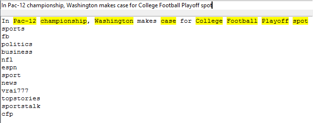

Introduction
The goal of this project was to generate tags that might be produced by users tweeting out articles. For instance, take the Headline “In Pac-12 championship, Washington makes case for College Football Playoff spot” An Author for instance would want to know the following: What keywords does the reader see? What keyword(s) will the reader use to tweet the article ? This AI tool will help these writers, and marketers, determine the answers to these questions. 
Methods
Data was gathered with the rssfeed in Python. Then using the URLs of the articles I found any retweets of the article. From these tweets I then stored, what tags were used, and the titles of the article. I also use Auto Tags, based off the type of the feed, (politics, sports etc..) Then In order to do keyword recognition I used natural language processing. Specifically the NLTK library was used. Keywords were Identified by Nouns, Verbs, Pronouns, and Names. Using the keyword identification on articles, we can predict Tags. For every keyword/hashtag pair for each article, we either add to the dictionary this pair with a count of one, or increment the existing count by one. To predict the tags that will appear when article is tweeted out, using the keyword identification, we then view all hashtags associated with all keywords, and order them by the number of times the hashtag has appeared. For the purpose of testing accuracy, we view the top 3 hashtags and if any of these hashtags are present in the actual tags of the tweets then we count it as a success.
Results
We can see that strangely, nouns are the best performers. Even though it is a less strict category than proper names and nouns. Verbs alone, also perform poorly. I hypothesize this is due to the fact that few verbs, without context do not elicit a reaction. Figure 2 shows how people identify keywords from the headline, “In Pac-12 championship, Washington makes case for College Football Playoff spot” and in figure 3 shows is how the system identifies keywords, and what hashtags it predicted.
From this frequency chart we can see that all the top frequencies are indeed nouns. This helps reinforce the case that nouns are incredibly important for keywords. However, when going through the data, besides one response almost everyone, included multiple keywords. This indicates that instead of focusing on individual keywords as shown in the method, instead one should be focusing on either pairs or multiple combinations of keywords.
How the system Identifies Keywords. The yellow words are identified Keywords. The following lines are Hashtags predicted for the headline. This is an example of How one Keyword can effect the prediction of tags. Washington having likely has a large and diverse number of hashtags tweeted with this keyword, affecting the most likely tags to appear.
Conclusion
Data Gathering. Current Events have a heavy effect on what the data recognizes as keywords. Also instead of training a general tag solver, perhaps a tag solver, that only trains using past x days. This would help to capture these current trends I seem to be missing.
Keyword Detection. Named entity recognition is very difficult, however there are some methods that could be implemented still. After Identifying keywords, perhaps one could score the keywords to weight their influence on the top tags.
From the results of the Google Survey, It is very clear, that rarely is it a single keyword that is the deciding factor for reaction. The algorithm needs to be expanded to look at combinations of keywords rather than the individual keywords. Likely not just combinations but also tone of voice. If continued the project will have to do more research onto exactly what people see as important words in the headline.